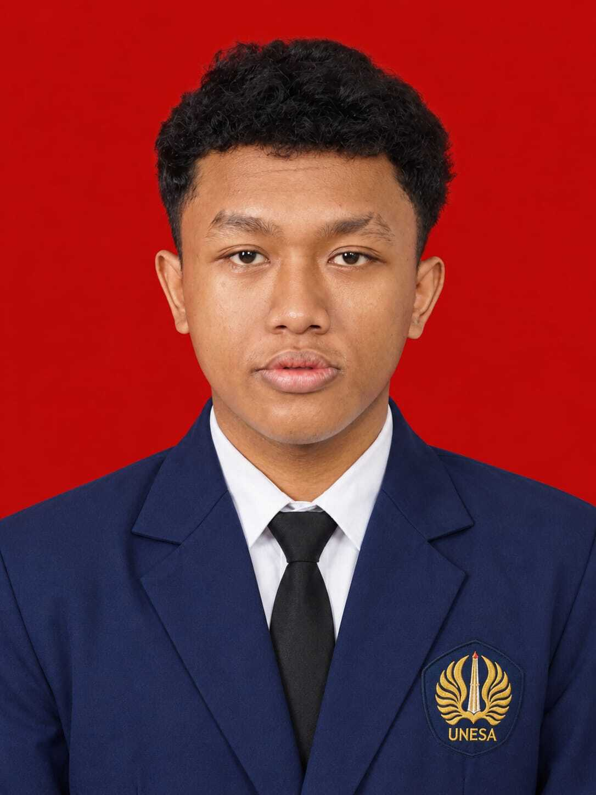

Jorell Ozora Jizraele
Mahasiswa Sistem Informasi Fakultas Teknik Universitas Negeri Surabaya (UNESA) yang berfokus pada pengembangan web, analisis sistem, dan pemecahan masalah digital.

SELECTED WORK
Work Gallery & Achievements
Kumpulan proyek sistem, digital, dan pencapaian akademik yang pernah dibangun.
Jorel Vault (Personal Website)
Website portofolio pribadi interaktif yang dibangun menggunakan HTML, Bootstrap 5, dan kustomisasi gaya modern.
Analisis EIS PT Telkom Indonesia
Analisis Enterprise Information Systems (EIS) dan executive dashboards untuk studi kasus korporasi (Kelompok 2).
EUNOIA Challenge Submission
Pembuatan infografis bertajuk "EMPOWERING TOMORROW: How Youth Leaders are Fixing the Global Education Crisis".
MY CAPABILITIES
What I Can Do
Menggabungkan pemecahan masalah teknis dan keterampilan digital untuk membangun sistem yang handal.
Web & Digital Development
Membangun dan merancang halaman web yang interaktif, responsif, serta terstruktur dengan baik menggunakan standar industri terkini.
Systems & Data Analysis
Mendukung analisis sistem informasi perusahaan, pengelolaan alur kerja digital, serta dokumentasi riset yang sistematis.
ABOUT ME
Problem Solver. Digital Generalist.
Jorell Ozora Jizraele
Nama Lengkap
Sistem Informasi
Program Studi (UNESA)
2026
Angkatan / Tahun
Saya adalah mahasiswa Program Studi Sistem Informasi di Fakultas Teknik, Universitas Negeri Surabaya (UNESA). Berasal dari Bogor dan kini berkuliah di Surabaya. Saya memiliki minat besar dalam pengembangan web, pengelolaan sistem informasi perusahaan, serta aktif mengeksplorasi teknologi baru melalui kompetisi dan proyek akademik.
GET IN TOUCH
Let's Work Together
Terbuka untuk kolaborasi, diskusi proyek teknologi, atau peluang magang di bidang sistem informasi dan web development.
ozorajorel008@gmail.com
github.com/SirJorelOzora
www.linkedin.com/in/jorel-ozora-9a3101441